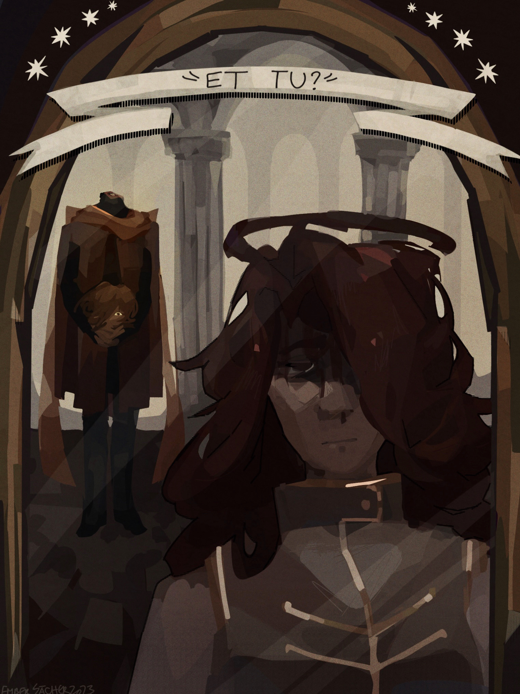

even you, brutus
creation date: dec 30
characters featured: marcene & callisto
this illust is so funny because you can see exactly which things i love and hate rendering the most.
anyways.
so no head?
ho hum, it's a lore illust. more metaphorical than literal. ending the proccess of this drawing was frustrating, the contrast levels looked different on both my phone and my laptop and it took forever to make it look *clear* on both ends - hopefully these final edits did the trick. overall i'm not sure where i stand with this illust. it's fine, i think. again, you can tell exactly what i loved and hated drawing here 😭